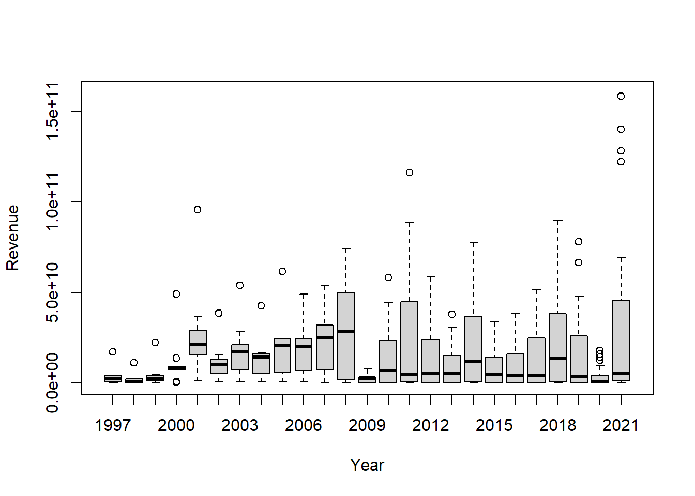
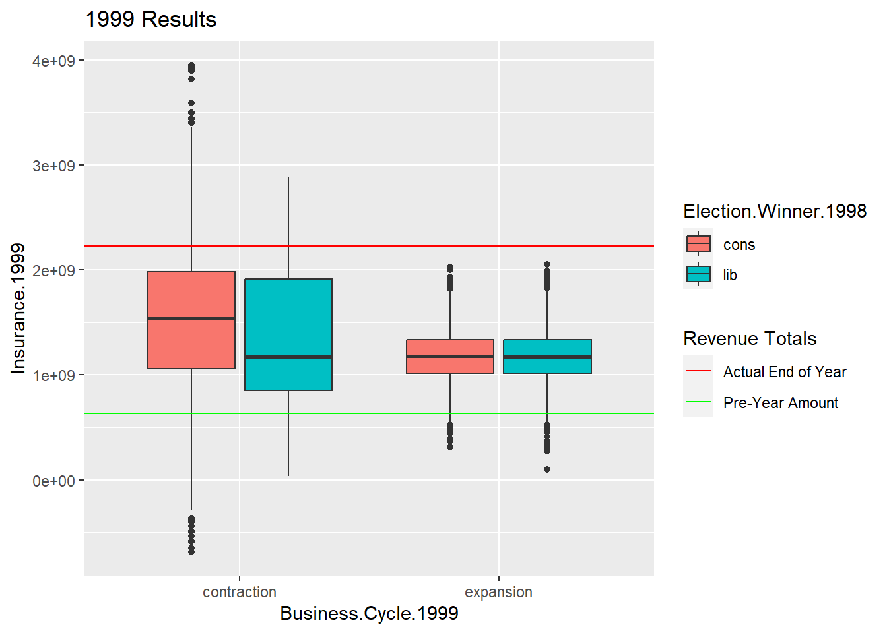
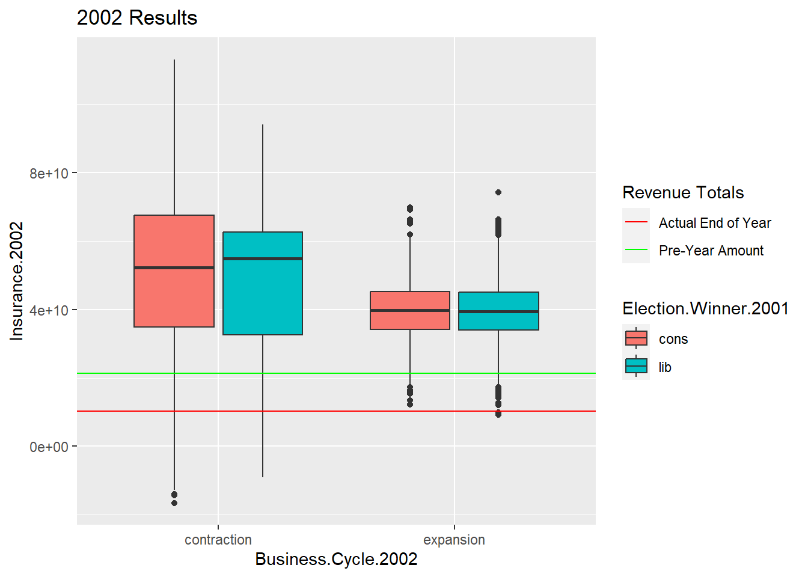
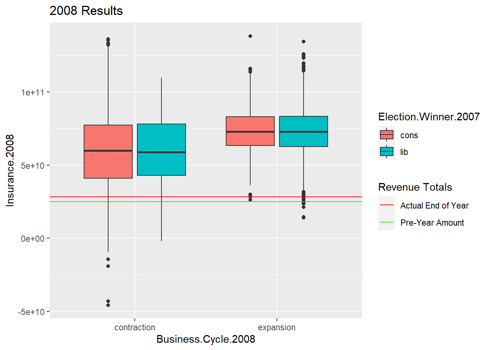
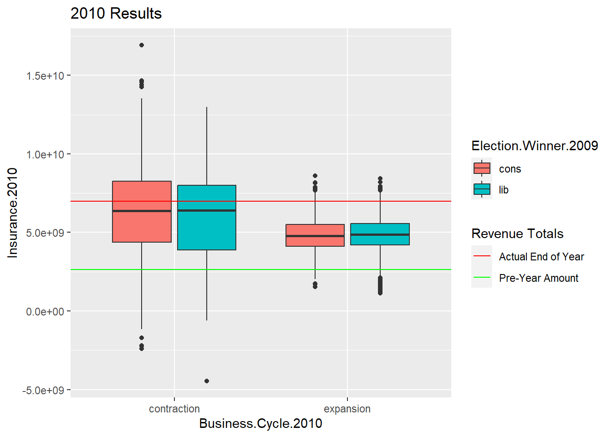
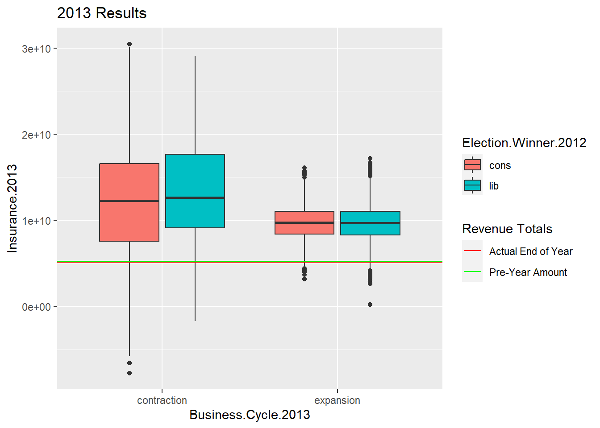
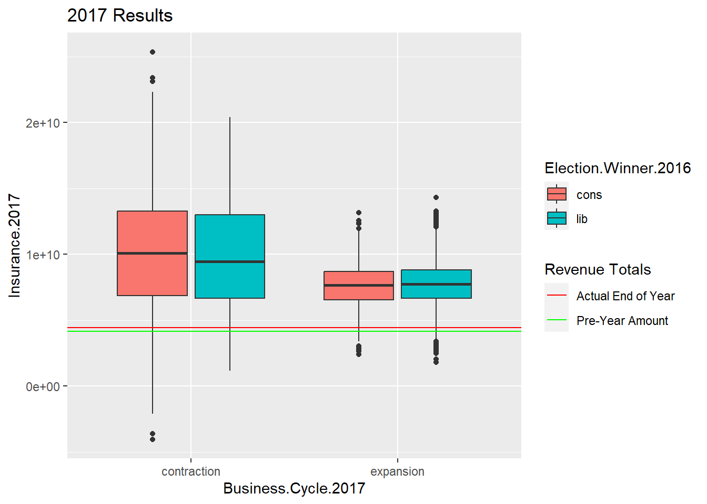
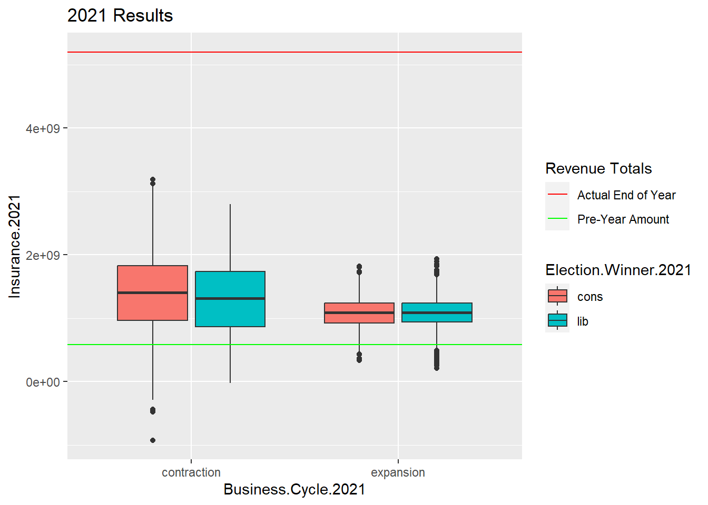

PRI Canadian O&G
Code
Y <- c(ay98, ay99, ay00, ay01, ay02, ay03, ay04, ay05, ay06, ay07, ay08, ay09, ay10,
ay11, ay12, ay13, ay14, ay15, ay16, ay17, ay18, ay19, ay20, ay21)
X <- c(1998, 1999, 2000, 2001, 2002, 2003, 2004, 2005, 2006, 2007, 2008, 2009, 2010, 2011,
2012, 2013, 2014, 2015, 2016, 2017, 2018, 2019, 2020, 2021)
regall <- lm(Y ~ X - 1)
summary(regall)
Call:
lm(formula = Y ~ X - 1)
Residuals:
Min 1Q Median 3Q Max
-1.317e+10 -6.101e+09 -9.271e+08 4.925e+09 1.814e+10
Coefficients:
Estimate Std. Error t value Pr(>|t|)
X 7658514 856057 8.946 5.98e-09 ***
---
Signif. codes: 0 '***' 0.001 '**' 0.01 '*' 0.05 '.' 0.1 ' ' 1
Residual standard error: 8.427e+09 on 23 degrees of freedom
Multiple R-squared: 0.7768, Adjusted R-squared: 0.7671
F-statistic: 80.04 on 1 and 23 DF, p-value: 5.982e-09Code
plot(Y ~ X - 1)
abline(regall, col = "blue")

0% 25% 50% 75% 100%
6202000 107093500 632554000 2139100000 11122000000 0% 25% 50% 75% 100%
175309550 1089975255 2226164000 4395065000 22235690000 0% 25% 50% 75% 100%
507370000 5290501800 10277350000 13105740000 38514920000 0% 25% 50% 75% 100%
671600000 9954844500 20411500000 23796500000 49010000000 0% 25% 50% 75% 100%
56363340 1834950578 28238550000 47232915000 74038800000 0% 25% 50% 75% 100%
4353880 375289860 6992851040 22677200000 58035120000 0% 25% 50% 75% 100%
9938807 282860570 5106080000 14789960000 37879180000 0% 25% 50% 75% 100%
144000 351478800 4427627200 23556000000 51481600000 0% 25% 50% 75% 100%
146673668 1200914000 5198732600 45515800000 158000000000 Code
pre_amt99q1 <- quantile(y98, .25)
pre_amt99q2 <- quantile(y98, .50)
pre_amt99q3 <- quantile(y98, .75)
real1999q1 <- quantile(y99, .25)
real1999q2 <- quantile(y99, .50)
real1999q3 <- quantile(y99, .75)
pre_amt02q1 <- quantile(y01, .25)
pre_amt02q2 <- quantile(y01, .50)
pre_amt02q3 <- quantile(y01, .75)
real2002q1 <- quantile(y02, .25)
real2002q2 <- quantile(y02, .50)
real2002q3 <- quantile(y02, .75)
pre_amt06q1 <- quantile(y05, .25)
pre_amt06q2 <- quantile(y05, .50)
pre_amt06q3 <- quantile(y05, .75)
real2006q1 <- quantile(y06, .25)
real2006q2 <- quantile(y06, .50)
real2006q3 <- quantile(y06, .75)
pre_amt08q1 <- quantile(y07, .25)
pre_amt08q2 <- quantile(y07, .50)
pre_amt08q3 <- quantile(y07, .75)
real2008q1 <- quantile(y08, .25)
real2008q2 <- quantile(y08, .50)
real2008q3 <- quantile(y08, .75)
pre_amt10q1 <- quantile(y09, .25)
pre_amt10q2 <- quantile(y09, .50)
pre_amt10q3 <- quantile(y09, .75)
real2010q1 <- quantile(y10, .25)
real2010q2 <- quantile(y10, .50)
real2010q3 <- quantile(y10, .75)
pre_amt13q1 <- quantile(y12, .25)
pre_amt13q2 <- quantile(y12, .50)
pre_amt13q3 <- quantile(y12, .75)
real2013q1 <- quantile(y13, .25)
real2013q2 <- quantile(y13, .50)
real2013q3 <- quantile(y13, .75)
pre_amt17q1 <- quantile(y16, .25)
pre_amt17q2 <- quantile(y16, .50)
pre_amt17q3 <- quantile(y16, .75)
real2017q1 <- quantile(y17, .25)
real2017q2 <- quantile(y17, .50)
real2017q3 <- quantile(y17, .75)
pre_amt21q1 <- quantile(y20, .25)
pre_amt21q2 <- quantile(y20, .50)
pre_amt21q3 <- quantile(y20, .75)
real2021q1 <- quantile(y21, .25)
real2021q2 <- quantile(y21, .50)
real2021q3 <- quantile(y21, .75)Code
pre_amt08q2 50%
24910670000 Code
real2008q2 50%
28238550000 THIS LOOP When you see Growth Cycle, it really is Business Cycle.
Code
#LOOP
nIter=10000
results99q1=matrix(nrow=nIter,ncol=8)
colnames(results99q1)=c('Election','Pre_Amtq1','Winnerq1', 'Growth_Cycleq1', 'Post_Amtq1', 'Real_Amtq1', 'Insuranceq1', 'Coveredq1')
results99q2=matrix(nrow=nIter,ncol=8)
colnames(results99q2)=c('Election','Pre_Amtq2','Winnerq2', 'Growth_Cycleq2', 'Post_Amtq2', 'Real_Amtq2', 'Insuranceq2', 'Coveredq2')
results99q3=matrix(nrow=nIter,ncol=8)
colnames(results99q3)=c('Election','Pre_Amtq3','Winnerq3', 'Growth_Cycleq3', 'Post_Amtq3', 'Real_Amtq3', 'Insuranceq3', 'Coveredq3')
results02q1=matrix(nrow=nIter,ncol=8)
colnames(results02q1)=c('Election','Pre_Amtq1','Winner', 'Growth_Cycleq1', 'Post_Amtq1', 'Real_Amtq1', 'Insuranceq1', 'Coveredq1')
results02q2=matrix(nrow=nIter,ncol=8)
colnames(results02q2)=c('Election','Pre_Amtq2','Winner', 'Growth_Cycleq2', 'Post_Amtq2', 'Real_Amtq2', 'Insuranceq2', 'Coveredq2')
results02q3=matrix(nrow=nIter,ncol=8)
colnames(results02q3)=c('Election','Pre_Amtq3','Winner', 'Growth_Cycleq3', 'Post_Amtq3', 'Real_Amtq3', 'Insuranceq3', 'Coveredq3')
results06q1=matrix(nrow=nIter,ncol=8)
colnames(results06q1)=c('Election','Pre_Amtq1','Winner', 'Growth_Cycleq1', 'Post_Amtq1', 'Real_Amtq1', 'Insuranceq1', 'Coveredq1')
results06q2=matrix(nrow=nIter,ncol=8)
colnames(results06q2)=c('Election','Pre_Amtq2','Winner', 'Growth_Cycleq2', 'Post_Amtq2', 'Real_Amtq2', 'Insuranceq2', 'Coveredq2')
results06q3=matrix(nrow=nIter,ncol=8)
colnames(results06q3)=c('Election','Pre_Amtq3','Winner', 'Growth_Cycleq3', 'Post_Amtq3', 'Real_Amtq3', 'Insuranceq3', 'Coveredq3')
results08q1=matrix(nrow=nIter,ncol=8)
colnames(results08q1)=c('Election','Pre_Amtq1','Winner', 'Growth_Cycleq1', 'Post_Amtq1', 'Real_Amtq1', 'Insuranceq1', 'Coveredq1')
results08q2=matrix(nrow=nIter,ncol=8)
colnames(results08q2)=c('Election','Pre_Amtq2','Winner', 'Growth_Cycleq2', 'Post_Amtq2', 'Real_Amtq2', 'Insuranceq2', 'Coveredq2')
results08q3=matrix(nrow=nIter,ncol=8)
colnames(results08q3)=c('Election','Pre_Amtq3','Winner', 'Growth_Cycleq3', 'Post_Amtq3', 'Real_Amtq3', 'Insuranceq3', 'Coveredq3')
results10q1=matrix(nrow=nIter,ncol=8)
colnames(results10q1)=c('Election','Pre_Amtq1','Winner', 'Growth_Cycleq1', 'Post_Amtq1', 'Real_Amtq1', 'Insuranceq1', 'Coveredq1')
results10q2=matrix(nrow=nIter,ncol=8)
colnames(results10q2)=c('Election','Pre_Amtq2','Winner', 'Growth_Cycleq2', 'Post_Amtq2', 'Real_Amtq2', 'Insuranceq2', 'Coveredq2')
results10q3=matrix(nrow=nIter,ncol=8)
colnames(results10q3)=c('Election','Pre_Amtq3','Winner', 'Growth_Cycleq3', 'Post_Amtq3', 'Real_Amtq3', 'Insuranceq3', 'Coveredq3')
results13q1=matrix(nrow=nIter,ncol=8)
colnames(results13q1)=c('Election','Pre_Amtq1','Winner', 'Growth_Cycleq1', 'Post_Amtq1', 'Real_Amtq1', 'Insuranceq1', 'Coveredq1')
results13q2=matrix(nrow=nIter,ncol=8)
colnames(results13q2)=c('Election','Pre_Amtq2','Winner', 'Growth_Cycleq2', 'Post_Amtq2', 'Real_Amtq2', 'Insuranceq2', 'Coveredq2')
results13q3=matrix(nrow=nIter,ncol=8)
colnames(results13q3)=c('Election','Pre_Amtq3','Winner', 'Growth_Cycleq3', 'Post_Amtq3', 'Real_Amtq3', 'Insuranceq3', 'Coveredq3')
results17q1=matrix(nrow=nIter,ncol=8)
colnames(results17q1)=c('Election','Pre_Amtq1','Winner', 'Growth_Cycleq1', 'Post_Amtq1', 'Real_Amtq1', 'Insuranceq1', 'Coveredq1')
results17q2=matrix(nrow=nIter,ncol=8)
colnames(results17q2)=c('Election','Pre_Amtq2','Winner', 'Growth_Cycleq2', 'Post_Amtq2', 'Real_Amtq2', 'Insuranceq2', 'Coveredq2')
results17q3=matrix(nrow=nIter,ncol=8)
colnames(results17q3)=c('Election','Pre_Amtq3','Winner', 'Growth_Cycleq3', 'Post_Amtq3', 'Real_Amtq3', 'Insuranceq3', 'Coveredq3')
results21q1=matrix(nrow=nIter,ncol=8)
colnames(results21q1)=c('Election','Pre_Amtq1','Winner', 'Growth_Cycleq1', 'Post_Amtq1', 'Real_Amtq1', 'Insuranceq1', 'Coveredq1')
results21q2=matrix(nrow=nIter,ncol=8)
colnames(results21q2)=c('Election','Pre_Amtq2','Winner', 'Growth_Cycleq2', 'Post_Amtq2', 'Real_Amtq2', 'Insuranceq2', 'Coveredq2')
results21q3=matrix(nrow=nIter,ncol=8)
colnames(results21q3)=c('Election','Pre_Amtq3','Winner', 'Growth_Cycleq3', 'Post_Amtq3', 'Real_Amtq3', 'Insuranceq3', 'Coveredq3')
for(i in 1:nIter){
set.seed(i)
intial_amt=2490842340 #<- Amount as of end of 1997
####!!!!!!!!!!!!!!!!!!!!!!
exp_rate=1.021
cont_rate=1.016
exp_rate_noise=exp_rate+rnorm(1, 2.07, 0.64)
cont_rate_noise=cont_rate+rnorm(1, 1.63, 1.27)
# Election 1 1998 outcomes
election98_outcomes=c('lib','cons')
election98=sample(election98_outcomes,1,prob=c(.53,.47))
#Growth Cycle 1999
growthcycle99_outcomes=c('expansion','contraction')
if(election98=='lib'){growthcycle99=sample(growthcycle99_outcomes,1,prob=c(.99, .01))}
if(election98=='cons'){growthcycle99=sample(growthcycle99_outcomes,1,prob=c(.67, .33))}
if(growthcycle99=='expansion'){post_amt99q1=pre_amt99q1*exp_rate_noise}
if(growthcycle99=='contraction'){post_amt99q1=pre_amt99q1*cont_rate_noise}
insurance99q1=ifelse(growthcycle99=='expansion',0.60*post_amt99q1,0.90*post_amt99q1)
covered99q1 <- insurance99q1/real1999q1 #insurance as a percent of what the actual was and how much is helped.
results99q1[i,]=c('1999q1', pre_amt99q1, election98, growthcycle99, post_amt99q1, real1999q1, insurance99q1, covered99q1)
if(growthcycle99=='expansion'){post_amt99q2=pre_amt99q2*exp_rate_noise}
if(growthcycle99=='contraction'){post_amt99q2=pre_amt99q2*cont_rate_noise}
insurance99q2=ifelse(growthcycle99=='expansion',0.60*post_amt99q2,0.90*post_amt99q2)
covered99q2 <- insurance99q2/real1999q2 #insurance as a percent of what the actual was and how much is helped.
results99q2[i,]=c('1999q2', pre_amt99q2, election98, growthcycle99, post_amt99q2, real1999q2, insurance99q2, covered99q2)
if(growthcycle99=='expansion'){post_amt99q3=pre_amt99q3*exp_rate_noise}
if(growthcycle99=='contraction'){post_amt99q3=pre_amt99q3*cont_rate_noise}
insurance99q3=ifelse(growthcycle99=='expansion',0.60*post_amt99q3,0.90*post_amt99q3)
covered99q3 <- insurance99q3/real1999q3 #insurance as a percent of what the actual was and how much is helped.
results99q3[i,]=c('1999q3', pre_amt99q3, election98, growthcycle99, post_amt99q3, real1999q3, insurance99q3, covered99q3)
#Growth Cycle 2000
growthcycle00_outcomes=c('expansion','contraction')
if(growthcycle99=='expansion'){growthcycle00=sample(growthcycle00_outcomes,1,prob=c(.71,.29))}
if(growthcycle99=='contraction'){growthcycle00=sample(growthcycle00_outcomes,1,prob=c(.99, .01))}
# Election 2 2001
election01_outcomes=c('lib','cons')
if(growthcycle00=='expansion'){election01=sample(election01_outcomes,1,prob=c(.75, .25))}
if(growthcycle00=='contraction'){election01=sample(election01_outcomes,1,prob=c(.67, .33))}
#Growth Cycle 2002
growthcycle02_outcomes=c('expansion','contraction')
if(election01=='lib'){growthcycle02=sample(growthcycle02_outcomes,1,prob=c(.99, .01))}
if(election01=='cons'){growthcycle02=sample(growthcycle02_outcomes,1,prob=c(.67, .33))}
exp_rate_noise=exp_rate+rnorm(1, 2.07, 0.64)
cont_rate_noise=cont_rate+rnorm(1, 1.63, 1.27)
if(growthcycle02=='expansion'){post_amt02q1=pre_amt02q1*exp_rate_noise}
if(growthcycle02=='contraction'){post_amt02q1=pre_amt02q1*cont_rate_noise}
insurance02q1=ifelse(growthcycle02=='expansion',0.60*post_amt02q1,0.90*post_amt02q1)
covered02q1 <- insurance02q1/real2002q1 #insurance as a percent of what the actual was
results02q1[i,]=c('2002q1',pre_amt02q1,election01, growthcycle02,post_amt02q1,real2002q1, insurance02q1, covered02q1)
if(growthcycle02=='expansion'){post_amt02q2=pre_amt02q2*exp_rate_noise}
if(growthcycle02=='contraction'){post_amt02q2=pre_amt02q2*cont_rate_noise}
insurance02q2=ifelse(growthcycle02=='expansion',0.60*post_amt02q2,0.90*post_amt02q2)
covered02q2 <- insurance02q2/real2002q2 #insurance as a percent of what the actual was
results02q2[i,]=c('2002q2',pre_amt02q2,election01, growthcycle02,post_amt02q2,real2002q2, insurance02q2, covered02q2)
if(growthcycle02=='expansion'){post_amt02q3=pre_amt02q3*exp_rate_noise}
if(growthcycle02=='contraction'){post_amt02q3=pre_amt02q3*cont_rate_noise}
insurance02q3=ifelse(growthcycle02=='expansion',0.60*post_amt02q3,0.90*post_amt02q3)
covered02q3 <- insurance02q3/real2002q3 #insurance as a percent of what the actual was
results02q3[i,]=c('2002q3',pre_amt02q3,election01, growthcycle02,post_amt02q3,real2002q3, insurance02q3, covered02q3)
#Growth Cycle 2003
growthcycle03_outcomes=c('expansion','contraction')
if(growthcycle02=='expansion'){growthcycle03=sample(growthcycle03_outcomes,1,prob=c(.71, .29))}
if(growthcycle02=='contraction'){growthcycle03=sample(growthcycle03_outcomes,1,prob=c(.99, .01))}
#Growth Cycle 2004
growthcycle04_outcomes=c('expansion','contraction')
if(growthcycle03=='expansion'){growthcycle04=sample(growthcycle04_outcomes,1,prob=c(.71, .29))}
if(growthcycle03=='contraction'){growthcycle04=sample(growthcycle04_outcomes,1,prob=c(.99, .01))}
#Election 3 2005
election05_outcomes=c('lib','cons')
if(growthcycle04=='expansion'){election05=sample(election05_outcomes,1,prob=c(.75, .25))}
if(growthcycle04=='contraction'){election05=sample(election05_outcomes,1,prob=c(.67, .33))}
pre_amt06=20420510500 #<- ENTER REAL PRE 2006
#Growth Cycle 2006
growthcycle06_outcomes=c('expansion','contraction')
if(election05=='lib'){growthcycle06=sample(growthcycle06_outcomes,1,prob=c(.99, .01))}
if(election05=='cons'){growthcycle06=sample(growthcycle06_outcomes,1,prob=c(.67, .33))}
exp_rate_noise=exp_rate+rnorm(1, 2.07, 0.64)
cont_rate_noise=cont_rate+rnorm(1, 1.63, 1.27)
if(growthcycle06=='expansion'){post_amt06q1=pre_amt06q1*exp_rate_noise}
if(growthcycle06=='contraction'){post_amt06q1=pre_amt06q1*cont_rate_noise}
insurance06q1=ifelse(growthcycle06=='expansion',0.60*post_amt06q1,0.90*post_amt06q1)
covered06q1 <- insurance06q1/real2006q1
results06q1[i,]=c('2006q1',pre_amt06q1,election05, growthcycle06, post_amt06q1, real2006q1, insurance06q1, covered06q1)
if(growthcycle06=='expansion'){post_amt06q2=pre_amt06q2*exp_rate_noise}
if(growthcycle06=='contraction'){post_amt06q2=pre_amt06q2*cont_rate_noise}
insurance06q2=ifelse(growthcycle06=='expansion',0.60*post_amt06q2,0.90*post_amt06q2)
covered06q2 <- insurance06q2/real2006q2
results06q2[i,]=c('2006q1',pre_amt06q2,election05, growthcycle06, post_amt06q2, real2006q2, insurance06q2, covered06q2)
if(growthcycle06=='expansion'){post_amt06q3=pre_amt06q3*exp_rate_noise}
if(growthcycle06=='contraction'){post_amt06q3=pre_amt06q3*cont_rate_noise}
insurance06q3=ifelse(growthcycle06=='expansion',0.60*post_amt06q3,0.90*post_amt06q3)
covered06q3 <- insurance06q2/real2006q2
results06q3[i,]=c('2006q3',pre_amt06q3,election05, growthcycle06, post_amt06q3, real2006q3, insurance06q3, covered06q3)
#Election 4 2007
election07_outcomes=c('lib','cons')
if(growthcycle06=='expansion'){election07=sample(election07_outcomes,1,prob=c(.75, .25))}
if(growthcycle06=='contraction'){election07=sample(election07_outcomes,1,prob=c(.67, .33))}
#Growth Cycle 2008
growthcycle08_outcomes=c('expansion','contraction')
if(election07=='lib'){growthcycle08=sample(growthcycle08_outcomes,1,prob=c(.99, .01))}
if(election07=='cons'){growthcycle08=sample(growthcycle08_outcomes,1,prob=c(.67, .33))}
exp_rate_noise=exp_rate+rnorm(1, 2.07, 0.64)
cont_rate_noise=cont_rate+rnorm(1, 1.63, 1.27)
if(growthcycle08=='expansion'){post_amt08q1=pre_amt08q1*exp_rate_noise}
if(growthcycle08=='contraction'){post_amt08q1=pre_amt08q1*cont_rate_noise}
insurance08q1=ifelse(growthcycle08=='expansion',0.60*post_amt08q1,0.90*post_amt08q1)
covered08q1 <- insurance08q1/real2008q1
results08q1[i,]=c('2008q1',pre_amt08q1,election07, growthcycle08,post_amt08q1,real2008q1, insurance08q1, covered08q1)
if(growthcycle08=='expansion'){post_amt08q2=pre_amt08q2*exp_rate_noise}
if(growthcycle08=='contraction'){post_amt08q2=pre_amt08q2*cont_rate_noise}
insurance08q2=ifelse(growthcycle08=='expansion',0.95*post_amt08q2,0.90*post_amt08q2)
covered08q2 <- insurance08q2/real2008q2
results08q2[i,]=c('2008q2',pre_amt08q2,election07, growthcycle08,post_amt08q2,real2008q2, insurance08q2, covered08q2)
if(growthcycle08=='expansion'){post_amt08q3=pre_amt08q3*exp_rate_noise}
if(growthcycle08=='contraction'){post_amt08q3=pre_amt08q3*cont_rate_noise}
insurance08q3=ifelse(growthcycle08=='expansion',0.60*post_amt08q3,0.90*post_amt08q3)
covered08q3 <- insurance08q3/real2008q3
results08q3[i,]=c('2008q3',pre_amt08q3,election07, growthcycle08,post_amt08q3,real2008q3, insurance08q3, covered08q3)
#Election 5 2009
election09_outcomes=c('lib','cons')
if(growthcycle08=='expansion'){election09=sample(election09_outcomes,1,prob=c(.75, .25))}
if(growthcycle08=='contraction'){election09=sample(election09_outcomes,1,prob=c(.67, .33))}
#Growth Cycle 2010
growthcycle10_outcomes=c('expansion','contraction')
if(election09=='lib'){growthcycle10=sample(growthcycle10_outcomes,1,prob=c(.99, .01))}
if(election09=='cons'){growthcycle10=sample(growthcycle10_outcomes,1,prob=c(.67, .33))}
exp_rate_noise=exp_rate+rnorm(1, 2.07, 0.64)
cont_rate_noise=cont_rate+rnorm(1, 1.63, 1.27)
if(growthcycle10=='expansion'){post_amt10q1=pre_amt10q1*exp_rate_noise}
if(growthcycle10=='contraction'){post_amt10q1=pre_amt10q1*cont_rate_noise}
insurance10q1=ifelse(growthcycle10=='expansion',0.60*post_amt10q1,0.90*post_amt10q1)
covered10q1 <- insurance10q1/real2010q1
results10q1[i,]=c('2010q1',pre_amt10q1,election09, growthcycle10,post_amt10q1,real2010q1, insurance10q1, covered10q1)
if(growthcycle10=='expansion'){post_amt10q2=pre_amt10q2*exp_rate_noise}
if(growthcycle10=='contraction'){post_amt10q2=pre_amt10q2*cont_rate_noise}
insurance10q2=ifelse(growthcycle10=='expansion',0.60*post_amt10q2,0.90*post_amt10q2)
covered10q2 <- insurance10q2/real2010q2
results10q2[i,]=c('2010q2',pre_amt10q2,election09, growthcycle10,post_amt10q2,real2010q2, insurance10q2, covered10q2)
if(growthcycle10=='expansion'){post_amt10q3=pre_amt10q3*exp_rate_noise}
if(growthcycle10=='contraction'){post_amt10q3=pre_amt10q3*cont_rate_noise}
insurance10q3=ifelse(growthcycle10=='expansion',0.60*post_amt10q3,0.90*post_amt10q3)
covered10q3 <- insurance10q3/real2010q3
results10q3[i,]=c('2010q2',pre_amt10q3,election09, growthcycle10,post_amt10q3,real2010q3, insurance10q3, covered10q3)
#Growth Cycle 2011
growthcycle11_outcomes=c('expansion','contraction')
if(growthcycle10=='expansion'){growthcycle11=sample(growthcycle11_outcomes,1,prob=c(.71, .29))}
if(growthcycle10=='contraction'){growthcycle11=sample(growthcycle11_outcomes,1,prob=c(.99, .01))}
#Election 6 2012
election12_outcomes=c('lib','cons')
if(growthcycle11=='expansion'){election12=sample(election12_outcomes,1,prob=c(.75, .25))}
if(growthcycle11=='contraction'){election12=sample(election12_outcomes,1,prob=c(.67, .33))}
pre_amt13=5209648000 #<- ENTER REAL PRE 2013
#Growth Cycle 2013
growthcycle13_outcomes=c('expansion','contraction')
if(election12=='lib'){growthcycle13=sample(growthcycle13_outcomes,1,prob=c(.99, .01))}
if(election12=='cons'){growthcycle13=sample(growthcycle13_outcomes,1,prob=c(.67, .33))}
exp_rate_noise=exp_rate+rnorm(1, 2.07, 0.64)
cont_rate_noise=cont_rate+rnorm(1, 1.63, 1.27)
if(growthcycle13=='expansion'){post_amt13q1=pre_amt13q1*exp_rate_noise}
if(growthcycle13=='contraction'){post_amt13q1=pre_amt13q1*cont_rate_noise}
insurance13q1=ifelse(growthcycle13=='expansion',0.60*post_amt13q1,0.90*post_amt13q1)
covered13q1 <- insurance13q1/real2013q1
results13q1[i,]=c('2013',pre_amt13q1,election12, growthcycle13,post_amt13q1,real2013q1, insurance13q1, covered13q1)
if(growthcycle13=='expansion'){post_amt13q2=pre_amt13q2*exp_rate_noise}
if(growthcycle13=='contraction'){post_amt13q2=pre_amt13q2*cont_rate_noise}
insurance13q2=ifelse(growthcycle13=='expansion',0.60*post_amt13q2,0.90*post_amt13q2)
covered13q2 <- insurance13q2/real2013q2
results13q2[i,]=c('2013',pre_amt13q2,election12, growthcycle13,post_amt13q2,real2013q2, insurance13q2, covered13q2)
if(growthcycle13=='expansion'){post_amt13q3=pre_amt13q3*exp_rate_noise}
if(growthcycle13=='contraction'){post_amt13q3=pre_amt13q3*cont_rate_noise}
insurance13q3=ifelse(growthcycle13=='expansion',0.60*post_amt13q3,0.90*post_amt13q3)
covered13q3 <- insurance13q3/real2013q3
results13q3[i,]=c('2013',pre_amt13q3,election12, growthcycle13,post_amt13q3,real2013q3, insurance13q3, covered13q3)
#Growth Cycle 2014
growthcycle14_outcomes=c('expansion','contraction')
if(growthcycle13=='expansion'){growthcycle14=sample(growthcycle14_outcomes,1,prob=c(.71, .29))}
if(growthcycle13=='contraction'){growthcycle14=sample(growthcycle14_outcomes,1,prob=c(.99, .01))}
#Growth Cycle 2015
growthcycle15_outcomes=c('expansion','contraction')
if(growthcycle14=='expansion'){growthcycle15=sample(growthcycle15_outcomes,1,prob=c(.71, .29))}
if(growthcycle14=='contraction'){growthcycle15=sample(growthcycle15_outcomes,1,prob=c(.99, .01))}
#Election 7 2016
election16_outcomes=c('lib','cons')
if(growthcycle15=='expansion'){election16=sample(election16_outcomes,1,prob=c(.75,.25))}
if(growthcycle15=='contraction'){election16=sample(election16_outcomes,1,prob=c(.67, .33))}
pre_amt17=4172740000 #<- ENTER REAL PRE 2017
#Growth Cycle 2017
growthcycle17_outcomes=c('expansion','contraction')
if(election16=='lib'){growthcycle17=sample(growthcycle17_outcomes,1,prob=c(.99, .01))}
if(election16=='cons'){growthcycle17=sample(growthcycle17_outcomes,1,prob=c(.67, .33))}
exp_rate_noise=exp_rate+rnorm(1, 2.07, 0.64)
cont_rate_noise=cont_rate+rnorm(1, 1.63, 1.27)
if(growthcycle17=='expansion'){post_amt17q1=pre_amt17q1*exp_rate_noise}
if(growthcycle17=='contraction'){post_amt17q1=pre_amt17q1*cont_rate_noise}
insurance17q1=ifelse(growthcycle17=='expansion',0.60*post_amt17q1,0.90*post_amt17q1)
covered17q1 <- insurance17q1/real2017q1
results17q1[i,]=c('2017',pre_amt17q1,election16, growthcycle17, post_amt17q1, real2017q1, insurance17q1, covered17q1)
if(growthcycle17=='expansion'){post_amt17q2=pre_amt17q2*exp_rate_noise}
if(growthcycle17=='contraction'){post_amt17q2=pre_amt17q2*cont_rate_noise}
insurance17q2=ifelse(growthcycle17=='expansion',0.60*post_amt17q2,0.90*post_amt17q2)
covered17q2 <- insurance17q2/real2017q2
results17q2[i,]=c('2017',pre_amt17q2,election16, growthcycle17, post_amt17q2, real2017q2, insurance17q2, covered17q2)
if(growthcycle17=='expansion'){post_amt17q3=pre_amt17q3*exp_rate_noise}
if(growthcycle17=='contraction'){post_amt17q3=pre_amt17q3*cont_rate_noise}
insurance17q3=ifelse(growthcycle17=='expansion',0.60*post_amt17q3,0.90*post_amt17q3)
covered17q3 <- insurance17q3/real2017q3
results17q3[i,]=c('2017',pre_amt17q3,election16, growthcycle17, post_amt17q3, real2017q3, insurance17q3, covered17q3)
#Growth Cycle 2018
growthcycle18_outcomes=c('expansion','contraction')
if(growthcycle17=='expansion'){growthcycle18=sample(growthcycle18_outcomes,1,prob=c(.71, .29))}
if(growthcycle17=='contraction'){growthcycle18=sample(growthcycle18_outcomes,1,prob=c(.99, .01))}
#Growth Cycle 2019
growthcycle19_outcomes=c('expansion','contraction')
if(growthcycle18=='expansion'){growthcycle19=sample(growthcycle19_outcomes,1,prob=c(.71, .29))}
if(growthcycle18=='contraction'){growthcycle19=sample(growthcycle19_outcomes,1,prob=c(.99, .01))}
#Election 8 2020
election20_outcomes=c('lib','cons')
if(growthcycle19=='expansion'){election20=sample(election20_outcomes,1,prob=c(.75, .25))}
if(growthcycle19=='contraction'){election20=sample(election20_outcomes,1,prob=c(.67, .33))}
pre_amt21=584454240 #<- ENTER REAL PRE 2021
#Growth Cycle 2021
growthcycle21_outcomes=c('expansion','contraction')
if(election20=='lib'){growthcycle21=sample(growthcycle21_outcomes,1,prob=c(.99, .01))}
if(election20=='cons'){growthcycle21=sample(growthcycle21_outcomes,1,prob=c(.67, .33))}
exp_rate_noise=exp_rate+rnorm(1, 2.07, 0.64)
cont_rate_noise=cont_rate+rnorm(1, 1.63, 1.27)
if(growthcycle21=='expansion'){post_amt21q1=pre_amt21q1*exp_rate_noise}
if(growthcycle21=='contraction'){post_amt21q1=pre_amt21q1*cont_rate_noise}
insurance21q1=ifelse(growthcycle21=='expansion',0.60*post_amt21q1,0.90*post_amt21q1)
covered21q1 <- insurance21q1/real2021q1
results21q1[i,]=c('2021',pre_amt21q1,election20, growthcycle21,post_amt21q1,real2021q1, insurance21q1, covered21q1)
if(growthcycle21=='expansion'){post_amt21q2=pre_amt21q2*exp_rate_noise}
if(growthcycle21=='contraction'){post_amt21q2=pre_amt21q2*cont_rate_noise}
insurance21q2=ifelse(growthcycle21=='expansion',0.60*post_amt21q2,0.90*post_amt21q2)
covered21q2 <- insurance21q2/real2021q2
results21q2[i,]=c('2021',pre_amt21q2,election20, growthcycle21,post_amt21q2,real2021q2, insurance21q2, covered21q2)
if(growthcycle21=='expansion'){post_amt21q3=pre_amt21q3*exp_rate_noise}
if(growthcycle21=='contraction'){post_amt21q3=pre_amt21q3*cont_rate_noise}
insurance21q3=ifelse(growthcycle21=='expansion',0.60*post_amt21q3,0.90*post_amt21q3)
covered21q3 <- insurance21q3/real2021q3
results21q3[i,]=c('2021',pre_amt21q3,election20, growthcycle21,post_amt21q3,real2021q3, insurance21q3, covered21q3)
}Code
r99q1 <- as.data.frame(results99q1)
r99q2 <- as.data.frame(results99q2)
r99q3 <- as.data.frame(results99q3)Code
r02q1 <- as.data.frame(results02q1)
r02q2 <- as.data.frame(results02q2)
r02q3 <- as.data.frame(results02q3)Code
r06q1 <- as.data.frame(results06q1)
r06q2 <- as.data.frame(results06q2)
r06q3 <- as.data.frame(results06q3)Code
r08q1 <- as.data.frame(results08q1)
r08q2 <- as.data.frame(results08q2)
r08q3 <- as.data.frame(results08q3)Code
r10q1 <- as.data.frame(results10q1)
r10q2 <- as.data.frame(results10q2)
r10q3 <- as.data.frame(results10q3)Code
r13q1 <- as.data.frame(results13q1)
r13q2 <- as.data.frame(results13q2)
r13q3 <- as.data.frame(results13q3)Code
r17q1 <- as.data.frame(results17q1)
r17q2 <- as.data.frame(results17q2)
r17q3 <- as.data.frame(results17q3)Code
r21q1 <- as.data.frame(results21q1)
r21q2 <- as.data.frame(results21q2)
r21q3 <- as.data.frame(results21q3)Code
r99q1$Post_Amtq1 <- as.numeric(as.character(r99q1$Post_Amtq1))
r99q2$Post_Amtq2 <- as.numeric(as.character(r99q2$Post_Amtq2))
r99q3$Post_Amtq3 <- as.numeric(as.character(r99q3$Post_Amtq3))
r99q1$Insuranceq1 <- as.numeric(as.character(r99q1$Insuranceq1))
r99q2$Insuranceq2 <- as.numeric(as.character(r99q2$Insuranceq2))
r99q3$Insuranceq3 <- as.numeric(as.character(r99q3$Insuranceq3))
r99q1$Real_Amtq1 <- as.numeric(as.character(r99q1$Real_Amtq1))
r99q2$Real_Amtq2 <- as.numeric(as.character(r99q2$Real_Amtq2))
r99q3$Real_Amtq3 <- as.numeric(as.character(r99q3$Real_Amtq3))
r99realall <- data.frame(r99q1$Real_Amtq1, r99q2$Real_Amtq2, r99q3$Real_Amtq3)
r99insurance <- data.frame(r99q1$Insuranceq1, r99q2$Insuranceq2, r99q3$Insuranceq3)
r99post <- data.frame(r99q1$Post_Amtq1, r99q2$Post_Amtq2, r99q3$Post_Amtq3)
r99df <- data.frame(r99realall, r99insurance, r99post)Code
r02q1$Post_Amtq1 <- as.numeric(as.character(r02q1$Post_Amtq1))
r02q2$Post_Amtq2 <- as.numeric(as.character(r02q2$Post_Amtq2))
r02q3$Post_Amtq3 <- as.numeric(as.character(r02q3$Post_Amtq3))
r02q1$Insuranceq1 <- as.numeric(as.character(r02q1$Insuranceq1))
r02q2$Insuranceq2 <- as.numeric(as.character(r02q2$Insuranceq2))
r02q3$Insuranceq3 <- as.numeric(as.character(r02q3$Insuranceq3))
r02q1$Real_Amtq1 <- as.numeric(as.character(r02q1$Real_Amtq1))
r02q2$Real_Amtq2 <- as.numeric(as.character(r02q2$Real_Amtq2))
r02q3$Real_Amtq3 <- as.numeric(as.character(r02q3$Real_Amtq3))
r02realall <- data.frame(r02q1$Real_Amtq1, r02q2$Real_Amtq2, r02q3$Real_Amtq3)
r02insurance <- data.frame(r02q1$Insuranceq1, r02q2$Insuranceq2, r02q3$Insuranceq3)
r02post <- data.frame(r02q1$Post_Amtq1, r02q2$Post_Amtq2, r02q3$Post_Amtq3)
r02df <- data.frame(r02realall, r02insurance, r02post)Code
r06q1$Post_Amtq1 <- as.numeric(as.character(r06q1$Post_Amtq1))
r06q2$Post_Amtq2 <- as.numeric(as.character(r06q2$Post_Amtq2))
r06q3$Post_Amtq3 <- as.numeric(as.character(r06q3$Post_Amtq3))
r06q1$Insuranceq1 <- as.numeric(as.character(r06q1$Insuranceq1))
r06q2$Insuranceq2 <- as.numeric(as.character(r06q2$Insuranceq2))
r06q3$Insuranceq3 <- as.numeric(as.character(r06q3$Insuranceq3))
r06q1$Real_Amtq1 <- as.numeric(as.character(r06q1$Real_Amtq1))
r06q2$Real_Amtq2 <- as.numeric(as.character(r06q2$Real_Amtq2))
r06q3$Real_Amtq3 <- as.numeric(as.character(r06q3$Real_Amtq3))
r06realall <- data.frame(r06q1$Real_Amtq1, r06q2$Real_Amtq2, r06q3$Real_Amtq3)
r06insurance <- data.frame(r06q1$Insuranceq1, r06q2$Insuranceq2, r06q3$Insuranceq3)
r06post <- data.frame(r06q1$Post_Amtq1, r06q2$Post_Amtq2, r06q3$Post_Amtq3)
r06df <- data.frame(r06realall, r06insurance, r06post)Code
r08q1$Post_Amtq1 <- as.numeric(as.character(r08q1$Post_Amtq1))
r08q2$Post_Amtq2 <- as.numeric(as.character(r08q2$Post_Amtq2))
r08q3$Post_Amtq3 <- as.numeric(as.character(r08q3$Post_Amtq3))
r08q1$Insuranceq1 <- as.numeric(as.character(r08q1$Insuranceq1))
r08q2$Insuranceq2 <- as.numeric(as.character(r08q2$Insuranceq2))
r08q3$Insuranceq3 <- as.numeric(as.character(r08q3$Insuranceq3))
r08q1$Real_Amtq1 <- as.numeric(as.character(r08q1$Real_Amtq1))
r08q2$Real_Amtq2 <- as.numeric(as.character(r08q2$Real_Amtq2))
r08q3$Real_Amtq3 <- as.numeric(as.character(r08q3$Real_Amtq3))
r08realall <- data.frame(r08q1$Real_Amtq1, r08q2$Real_Amtq2, r08q3$Real_Amtq3)
r08insurance <- data.frame(r08q1$Insuranceq1, r08q2$Insuranceq2, r08q3$Insuranceq3)
r08post <- data.frame(r08q1$Post_Amtq1, r08q2$Post_Amtq2, r08q3$Post_Amtq3)
r08df <- data.frame(r08realall, r08insurance, r08post)Code
r10q1$Post_Amtq1 <- as.numeric(as.character(r10q1$Post_Amtq1))
r10q2$Post_Amtq2 <- as.numeric(as.character(r10q2$Post_Amtq2))
r10q3$Post_Amtq3 <- as.numeric(as.character(r10q3$Post_Amtq3))
r10q1$Insuranceq1 <- as.numeric(as.character(r10q1$Insuranceq1))
r10q2$Insuranceq2 <- as.numeric(as.character(r10q2$Insuranceq2))
r10q3$Insuranceq3 <- as.numeric(as.character(r10q3$Insuranceq3))
r10q1$Real_Amtq1 <- as.numeric(as.character(r10q1$Real_Amtq1))
r10q2$Real_Amtq2 <- as.numeric(as.character(r10q2$Real_Amtq2))
r10q3$Real_Amtq3 <- as.numeric(as.character(r10q3$Real_Amtq3))
r10realall <- data.frame(r10q1$Real_Amtq1, r10q2$Real_Amtq2, r10q3$Real_Amtq3)
r10insurance <- data.frame(r10q1$Insuranceq1, r10q2$Insuranceq2, r10q3$Insuranceq3)
r10post <- data.frame(r10q1$Post_Amtq1, r10q2$Post_Amtq2, r10q3$Post_Amtq3)
r10df <- data.frame(r10realall, r10insurance, r10post)Code
r13q1$Post_Amtq1 <- as.numeric(as.character(r13q1$Post_Amtq1))
r13q2$Post_Amtq2 <- as.numeric(as.character(r13q2$Post_Amtq2))
r13q3$Post_Amtq3 <- as.numeric(as.character(r13q3$Post_Amtq3))
r13q1$Insuranceq1 <- as.numeric(as.character(r13q1$Insuranceq1))
r13q2$Insuranceq2 <- as.numeric(as.character(r13q2$Insuranceq2))
r13q3$Insuranceq3 <- as.numeric(as.character(r13q3$Insuranceq3))
r13q1$Real_Amtq1 <- as.numeric(as.character(r13q1$Real_Amtq1))
r13q2$Real_Amtq2 <- as.numeric(as.character(r13q2$Real_Amtq2))
r13q3$Real_Amtq3 <- as.numeric(as.character(r13q3$Real_Amtq3))
r13realall <- data.frame(r13q1$Real_Amtq1, r13q2$Real_Amtq2, r13q3$Real_Amtq3)
r13insurance <- data.frame(r13q1$Insuranceq1, r13q2$Insuranceq2, r13q3$Insuranceq3)
r13post <- data.frame(r13q1$Post_Amtq1, r13q2$Post_Amtq2, r13q3$Post_Amtq3)
r13df <- data.frame(r13realall, r13insurance, r13post)Code
r17q1$Post_Amtq1 <- as.numeric(as.character(r17q1$Post_Amtq1))
r17q2$Post_Amtq2 <- as.numeric(as.character(r17q2$Post_Amtq2))
r17q3$Post_Amtq3 <- as.numeric(as.character(r17q3$Post_Amtq3))
r17q1$Insuranceq1 <- as.numeric(as.character(r17q1$Insuranceq1))
r17q2$Insuranceq2 <- as.numeric(as.character(r17q2$Insuranceq2))
r17q3$Insuranceq3 <- as.numeric(as.character(r17q3$Insuranceq3))
r17q1$Real_Amtq1 <- as.numeric(as.character(r17q1$Real_Amtq1))
r17q2$Real_Amtq2 <- as.numeric(as.character(r17q2$Real_Amtq2))
r17q3$Real_Amtq3 <- as.numeric(as.character(r17q3$Real_Amtq3))
r17realall <- data.frame(r17q1$Real_Amtq1, r17q2$Real_Amtq2, r17q3$Real_Amtq3)
r17insurance <- data.frame(r17q1$Insuranceq1, r17q2$Insuranceq2, r17q3$Insuranceq3)
r17post <- data.frame(r17q1$Post_Amtq1, r17q2$Post_Amtq2, r17q3$Post_Amtq3)
r17df <- data.frame(r17realall, r17insurance, r17post)Code
r21q1$Post_Amtq1 <- as.numeric(as.character(r21q1$Post_Amtq1))
r21q2$Post_Amtq2 <- as.numeric(as.character(r21q2$Post_Amtq2))
r21q3$Post_Amtq3 <- as.numeric(as.character(r21q3$Post_Amtq3))
r21q1$Insuranceq1 <- as.numeric(as.character(r21q1$Insuranceq1))
r21q2$Insuranceq2 <- as.numeric(as.character(r21q2$Insuranceq2))
r21q3$Insuranceq3 <- as.numeric(as.character(r21q3$Insuranceq3))
r21q1$Real_Amtq1 <- as.numeric(as.character(r21q1$Real_Amtq1))
r21q2$Real_Amtq2 <- as.numeric(as.character(r21q2$Real_Amtq2))
r21q3$Real_Amtq3 <- as.numeric(as.character(r21q3$Real_Amtq3))
r21q1$Coveredq1 <- as.numeric(as.character(r21q1$Coveredq1))
r21q2$Coveredq2 <- as.numeric(as.character(r21q2$Coveredq2))
r21q3$Coveredq3 <- as.numeric(as.character(r21q3$Coveredq3))
r21realall <- data.frame(r21q1$Real_Amtq1, r21q2$Real_Amtq2, r21q3$Real_Amtq3)
r21insurance <- data.frame(r21q1$Insuranceq1, r21q2$Insuranceq2, r21q3$Insuranceq3)
r21post <- data.frame(r21q1$Post_Amtq1, r21q2$Post_Amtq2, r21q3$Post_Amtq3)
r21covered <- data.frame(r21q1$Coveredq1, r21q2$Coveredq2, r21q3$Coveredq3)
r21df <- data.frame(r21realall, r21insurance, r21post, r21covered)Political Risk Insurance for Canadian Oil and Gas Companies
Orin Crouse, Erin Austin, Adam Spiegler
Abstract
This paper explores the concept of Political Risk Insurance (PRI) for Canadian Oil and Gas companies. The examination is to determine whether these companies should seek out PRI with results that hope to show the benefits or consequences. Having the conditions of the country’s influence from the business cycle, rare world changing events, and federal elections. Simulations that have changes in probabilities and random distributions to cover possible outcomes and repeat a thousand times. The results show that the rare usage of PRI is simply a lack of knowledge. Another finding is that from a policy point of view, companies see an ebb and flow with revenue. So, why spend money in attempt to sway the outcome of elections if it is shown to futile.
1. Introduction
We sought to to answer the question “Why isn’t political risk insurance used more widely and freely?”. For our discussion we wanted to narrow the focus down. Down to one market in a single country. The reason to choose oil and gas was because there would be, as we hoped, more data available along with more controversies surrounding oil and gas. This would lead to better findings and stronger statements.
This idea came about because of COVID-19####*#
# 2. Conceptual FrameworkThe frame for this was to build essentially a flowchart, a really big flowchart. Starting with the first year 1998, as far back as we could go in finding the data (explained in later section). The year 1998 was an election for Canada and so the branches off of 1998 would be two, and labeled Liberal or Conservative. This is the same for each election year. Following an election year would be another set of two branches, one for Expansion and one for Contraction. These mark what the following year would be for the business cycle of Canada. In the first case we are saying given a Liberal/Conservative win in 1998, there could be a Expansion/Contraction in the year 1999. The time span we looked at is from 1998 to 2021, and in this time span there were 8 elections; 1998, 2001, 2005, 2007, 2009, 2012, 2016, 2020. Every year in between would be marked as a business cycle year. This model, as discussed more in further sections, could be built upon to add more variables, but for now we wanted see what impacted elections and the business cycle had on predicted revenue.
For the purpose of this paper we looked at the year following an election. Did the result of that election have an impact of the business cycle that would lead to a decrease or increase in predicted revenue. For this, it is an input of the actual amount (again in 2022 dollars) earned by all companies at the start of an election year. Now this could be a wide range and differ quite a lot with companies entering and exiting the market, so we took the median amount each time. This would for better control and eliminate the risk of skewness due to outliers. This median amount is used, and then through processing (that it is described in better detail later), we receive a predicted amount at the end of the business cycle year. Comparing that to the actual earned amount we can see: one, how accurate
Code
grViz(diagram = "digraph flowchart {
node [fontname = arial, shape = oval]
tab1 [label = '@@1']
tab2 [label = '@@2']
tab3 [label = '@@3']
tab4 [label = '@@4']
tab5 [label = '@@5']
tab6 [label = '@@6']
tab7 [label = '@@7']
tab1 -> tab2;
tab1 -> tab3;
tab2 -> tab4;
tab2 -> tab5;
tab3 -> tab6;
tab3 -> tab7
}
[1]: '1998 Election'
[2]: 'Conservation'
[3]: 'Liberal'
[4]: '1999 Expansion'
[5]: '1999 Contraction'
[6]: '1999 Expansion'
[7]: '1999 Contraction'
"
)Flowchart base
3.1 Data Source
Data was primarily observed from The System for Electronic Document Analysis and Retrieval (SEDAR) which is a filing system developed for the Canadian Securities Administrators. Similar to the United States Securities and Exchange Commission (SEC), but is not a federal or province entity, but rather is “is the official site that provides access to most public securities documents and information filed by issuers with the thirteen provincial and territorial securities regulatory authorities (”Canadian Securities Administrators” or “CSA”) in the SEDAR filing system. The statutory objective in making public this filed information is to enhance investor awareness of the business and affairs of issuers and to promote confidence in the transparent operation of capital markets in Canada. Achieving this objective relies heavily on the provision of accurate information on market participants ” (SEDAR, 2022).
We used SEDAR as the point of reference to collect oil and gas producing revenue from as many oil and gas companies from Canada that are reported and filled at SEDAR. These fillings go back to 1990, but most data only dates back to 1997 and this is where the discussion starts. Using the median value of revenue from all oil and gas companies from 1997, $2.09 billion (Canadian dollars). This amount is translated with inflation into today’s current dollars. This process was accomplished by using data from the Economic Research in the U.S. Federal Reserve Bank of St. Louis (FRED)
The following years were observed to look at elections from 1998 to 2021 from the website directly from the Parliament of Canada. This was to determine which parties were elected to the majority and the probability of those parties. The probabilities were found from various polling firms. From these polls, the data taken was only pertaining to the liberal and conservative parties. The other parties were left out as to they did provide a significant impact (Insert Evidence)
Each year that falls in-between elections were tracked by the business cycle for Canada, whether the aggregate of each year individually was an expansion year or contraction year. Although the business cycle fluctuates more within a year, the aggregate for the whole year was used as this influences voting more so (Insert Evidence). This data was found from FRED.
3.2 Data processing
The data was pulled, and formatted in order to show an easy representation that can be read easily. The dollar amount of each was translated with the Consumer Price Index (CPI) calculator (from the Bank of Canada) to show each year’s revenue into the dollar amount of 2021. Meaning, given the graph below (Will Reformat tables and graphs to reference better) you can see that 1997’s revenue dollar amount is multiplied by 1.5740 to be the equivalent amount if that was earned in 2021.
Code
boxplot(Revenue ~ Year, data=fellow, ylim=c(100000, 160000000000))
The simulation started in the year 1998 where from the polling information it was determined that the liberal party had a 53% chance of winning over the conservative party at 47%. Every year following, whether calculating for the business cycle or for the next election, the probabilities were based on the given condition of the previous year. It follows as such that in 1999 there was no election, so the business cycle was calculated. This was seen has there being a 99% of expansion following a liberal win, there being a 67% chance of contraction following a conservative win. Probability for a contraction year is simply 1 minus the probability of growth. Similarly, the next election was in 2001 and it follows that the probability for a liberal win following an expansion is 75% while following a contraction is 67%. Again it follows that the probability of not winning is simply the 1 minus the probability of winning.
With calculations following election years, it is used that a expansion rate of 1.021 and a contraction rate of 1.016. These rates were calculated with the found aggregate for each year, compiled together, and then set for the average rate over the 22 year time span. The rates are used with random normal distribution to predict an amount of revenue that all companies median revenue amount would end in. For the expansion rate, there is a mean of 2.07 and a standard deviation of 0.64. For the contraction rate, there is a mean of 1.63 and a standard deviation of 1.27.
The amount for post year is used to determine an insurance amount. This amount is would be the coverage amount that should be sought after in order to protect profit. If the business cycle for the year is expansion, the predicted post amount is multiplied by .95, but if it is a contraction the predicted post amount is multiplied by .60. If there is an expansion following an election, a company should experience growth in revenue, therefore, there should not be a reason for insurance to be used if there is no loss experienced. As for a contraction, a loss in revenue not only could happen but is expected. With the economy of the country going through a downturn, a company for oil and gas would not be able to not experience the same. The hope would be to use an insurance policy to cover any and all loss. We use the value of 60% as a baseline to determine if there is a correlation, and enough to show that there is evidence to a reason for PRI. The reason why the insurance is not more than 60%, is for the insurance company (input more reason given reading articles as to why this is 60 and not closer to 80 or 85) also needs to mitigate loss. The remaining 40% from the predicted amount would be the amount given to an insurance company in premiums and a deductible to use the policy.
3.3 Data Results
The results from the simulation was interesting to say the least. Different outcomes came from different inputs, as expected, but when there were similar inputs, there were not so similar outputs. ^&. We also see when there are different inputs, there would be similar outputs. For example, the years 1999 and 2021, both followed elections that led to a Liberal win. Now 1999 was an expansion year while 2021 was a contraction. For both years the prediction model under performed greatly from the actual end of year amount was (2021 even more so). How can we explain the differences? This would a be a great question for another analysis, all we can say is that different time periods are less predictable than others.
Amoung the well predicted
Code
Business.Cycle.1999 <- r99q2$Growth_Cycleq2
Election.Winner.1998 <- r99q2$Winner
Insurance.1999 <-r99q2$Insuranceq2
data99 = data.frame(Insurance.1999, Election.Winner.1998, Business.Cycle.1999)
plot99 <- ggplot(data99, aes(x=Business.Cycle.1999, y=Insurance.1999,
fill=Election.Winner.1998)) + labs(title="1999 Results") + geom_boxplot(
) + geom_hline(aes(yintercept = real1999q2,linetype = "Actual End of Year"),
colour= 'red') + geom_hline(aes(yintercept = pre_amt99q2,linetype
= "Pre-Year Amount"), colour= 'green') + scale_linetype_manual(
name ="Revenue Totals", values = c(1,1),
guide = guide_legend(override.aes = list(color = c('red', 'green'))))
plot99
Code
Business.Cycle.2002 <- r02q2$Growth_Cycleq2
Election.Winner.2001 <- r02q2$Winner
Insurance.2002 <-r02q2$Insuranceq2
data02 = data.frame(Insurance.2002, Election.Winner.2001, Business.Cycle.2002)
plot02 <- ggplot(data02, aes(x=Business.Cycle.2002, y=Insurance.2002,
fill=Election.Winner.2001)) + labs(title="2002 Results") + geom_boxplot(
) + geom_hline(aes(yintercept = real2002q2,linetype = "Actual End of Year"),
colour= 'red') + geom_hline(aes(yintercept = pre_amt02q2,linetype
= "Pre-Year Amount"), colour= 'green') + scale_linetype_manual(
name ="Revenue Totals", values = c(1,1),
guide = guide_legend(override.aes = list(color = c('red', 'green'))))
plot02
Code
Business.Cycle.2006 <- r06q2$Growth_Cycleq2
Election.Winner.2005 <- r06q2$Winner
Insurance.2006 <-r06q2$Insuranceq2
data06 = data.frame(Insurance.2006, Election.Winner.2005, Business.Cycle.2006)
plot06 <- ggplot(data06, aes(x=Business.Cycle.2006, y=Insurance.2006,
fill=Election.Winner.2005)) + labs(title="2006 Results") + geom_boxplot(
) + geom_hline(aes(yintercept = real2006q2,linetype = "Actual End of Year"),
colour= 'red') + geom_hline(aes(yintercept = pre_amt06q2,linetype
= "Pre-Year Amount"), colour= 'green') + scale_linetype_manual(
name ="Revenue Totals", values = c(1,1),
guide = guide_legend(override.aes = list(color = c('red', 'green'))))
plot06Code
Business.Cycle.2008 <- r08q2$Growth_Cycleq2
Election.Winner.2007 <- r08q2$Winner
Insurance.2008 <- r08q2$Insuranceq2
data08 = data.frame(Insurance.2008, Election.Winner.2007, Business.Cycle.2008)
plot08 <- ggplot(data08, aes(x=Business.Cycle.2008, y=Insurance.2008,
fill=Election.Winner.2007)) + labs(title="2008 Results") + geom_boxplot(
) + geom_hline(aes(yintercept = real2008q2,linetype = "Actual End of Year"),
colour= 'red') + geom_hline(aes(yintercept = pre_amt08q2,linetype
= "Pre-Year Amount"), colour= 'green') + scale_linetype_manual(
name ="Revenue Totals", values = c(1,1),
guide = guide_legend(override.aes = list(color = c('red', 'green'))))
plot08
Code
Business.Cycle.2010 <- r10q2$Growth_Cycleq2
Election.Winner.2009 <- r10q2$Winner
Insurance.2010 <-r10q2$Insuranceq2
data10 = data.frame(Insurance.2010, Election.Winner.2009, Business.Cycle.2010)
plot10 <- ggplot(data10, aes(x=Business.Cycle.2010, y=Insurance.2010,
fill=Election.Winner.2009)) + labs(title="2010 Results") + geom_boxplot(
) + geom_hline(aes(yintercept = real2010q2,linetype = "Actual End of Year"),
colour= 'red') + geom_hline(aes(yintercept = pre_amt10q2,linetype
= "Pre-Year Amount"), colour= 'green') + scale_linetype_manual(
name ="Revenue Totals", values = c(1,1),
guide = guide_legend(override.aes = list(color = c('red', 'green'))))
plot10
Code
Business.Cycle.2013 <- r13q2$Growth_Cycleq2
Election.Winner.2012 <- r13q2$Winner
Insurance.2013 <-r13q2$Insuranceq2
data13 = data.frame(Insurance.2013, Election.Winner.2012, Business.Cycle.2013)
plot13 <- ggplot(data13, aes(x=Business.Cycle.2013, y=Insurance.2013,
fill=Election.Winner.2012)) + labs(title="2013 Results") + geom_boxplot(
) + geom_hline(aes(yintercept = real2013q2,linetype = "Actual End of Year"),
colour= 'red') + geom_hline(aes(yintercept = pre_amt13q2,linetype
= "Pre-Year Amount"), colour= 'green') + scale_linetype_manual(
name ="Revenue Totals", values = c(1,1),
guide = guide_legend(override.aes = list(color = c('red', 'green'))))
plot13
Code
Business.Cycle.2017 <- r17q2$Growth_Cycleq2
Election.Winner.2016 <- r17q2$Winner
Insurance.2017 <-r17q2$Insuranceq2
data17 = data.frame(Insurance.2017, Election.Winner.2016, Business.Cycle.2017)
plot17 <- ggplot(data17, aes(x=Business.Cycle.2017, y=Insurance.2017,
fill=Election.Winner.2016)) + labs(title="2017 Results") + geom_boxplot(
) + geom_hline(aes(yintercept = real2017q2,linetype = "Actual End of Year"),
colour= 'red') + geom_hline(aes(yintercept = pre_amt17q2,linetype
= "Pre-Year Amount"), colour= 'green') + scale_linetype_manual(
name ="Revenue Totals", values = c(1,1),
guide = guide_legend(override.aes = list(color = c('red', 'green'))))
plot17
Code
Business.Cycle.2021 <- r21q2$Growth_Cycleq2
Election.Winner.2021 <- r21q2$Winner
Insurance.2021 <-r21q2$Insuranceq2
data21 = data.frame(Insurance.2021, Election.Winner.2021, Business.Cycle.2021)
plot21 <- ggplot(data21, aes(x=Business.Cycle.2021, y=Insurance.2021,
fill=Election.Winner.2021)) + labs(title="2021 Results") + geom_boxplot(
) + geom_hline(aes(yintercept = real2021q2,linetype = "Actual End of Year"),
colour= 'red') + geom_hline(aes(yintercept = pre_amt21q2,linetype
= "Pre-Year Amount"), colour= 'green') + scale_linetype_manual(
name ="Revenue Totals", values = c(1,1),
guide = guide_legend(override.aes = list(color = c('red', 'green'))))
plot21